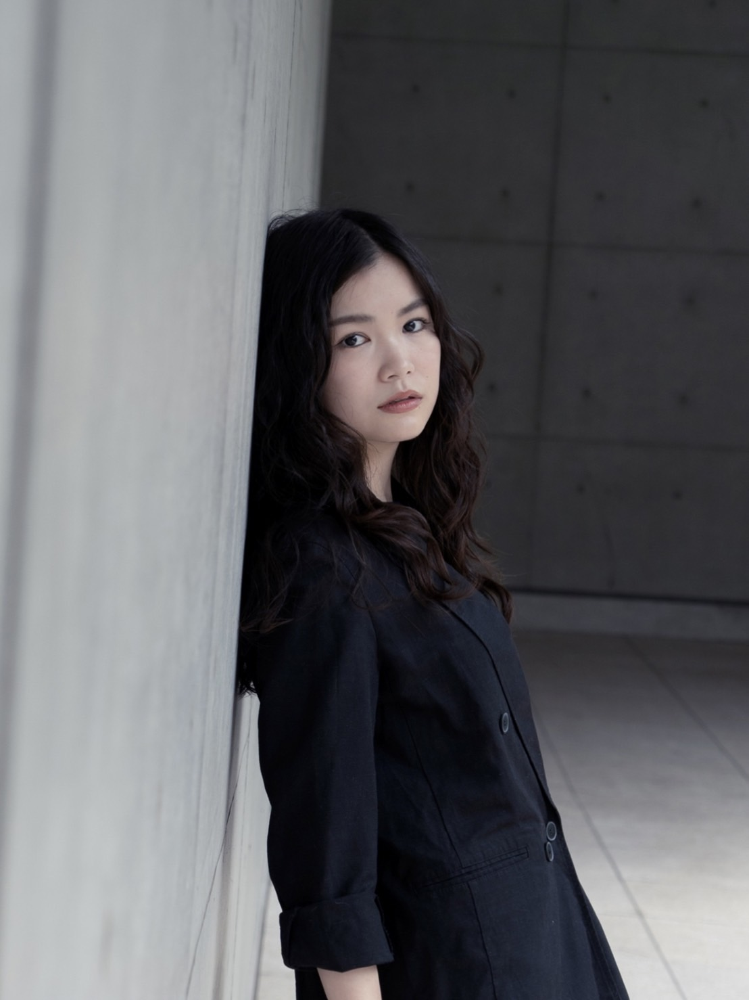
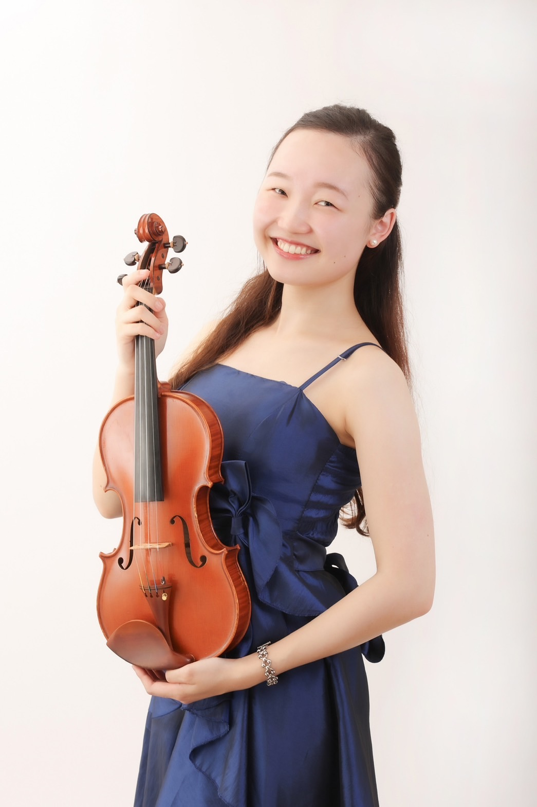
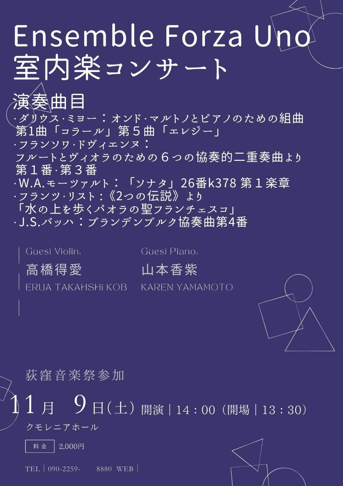

山本香紫(やまもとかれん)駒澤大学文学部歴史学科卒業、東京音楽大学大学院修士課程修了。
主な賞歴に、第20回大阪国際音楽コンクールエクセレンスコース第2位、
第11回ロザリオ·マルシアーノ国際ピアノコンクールファイナリスト、奨励賞受賞。
ピアノを稲本亜理子、岡本美智子、川上昌裕、岡田敦子各氏に師事。作曲家·早坂文雄の作品·言説研究にも精力的に取り組む。
現在、東京音楽大学演奏研究員。日本音楽学会東日本支部会員。

3歳より才能教育でヴァイオリンを始める。シンガポールのInternationalschool 卒業、
東京音楽大学ミュージック·リベラルアーツ(ヴァイオリン)専攻4年在学中。
神奈川音楽コンクール特選、ベーテン音楽コンクール優秀賞。
2018年よりシンガポールに転居し、Symphony 924 Young TalentsProjectのSemi-FinalistとしてSingaporeD Victoria Concert Hallniにて演奏。
Citta di massa 国際コンペティションアンサンブル部門2位。
2023年Bljoバイエルン州立青少年才ーケストラのドイツの演奏ツアーで公演。
現在は学業と両立しながら、演奏指導や、室内楽、オーケストラ等で各種コンサートやリサイタルなど幅広く演奏活動をしている。
これまでに高橋和歌、NarineGevorgyan, Alexander Souptel,Masako Suzuki White、荒井英治、神尾真由子に師事。
